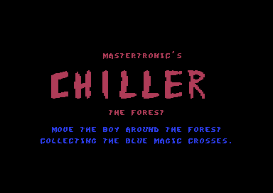
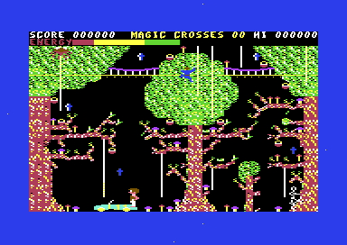
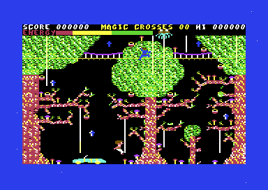
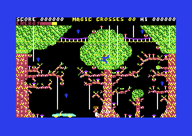
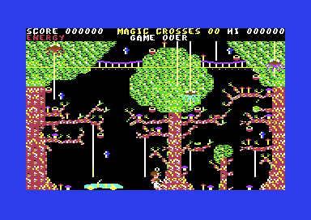

<meta charset="utf-8">
<meta name="viewport" content="width=device-width, initial-scale=1">
<title>{{title}}</title>
<link rel="preconnect" href="https://fonts.googleapis.com">
<link rel="stylesheet" href="https://fonts.googleapis.com/css2?family=Lato:wght@400;700;900&family=IBM+Plex+Mono:wght@400;500&display=swap">
<style>
:root{
  --bg:#23262d; --paper:#e9e7e1; --surface:#ffffff; --surface-2:#f1efea; --line:#d5d3cc; --line-soft:#e0ded8;
  --ink:#2f3136; --ink-soft:#55585f; --ink-mute:#80838a;
  --link:#1f5fa8; --link-hover:#154480; --accent:#1f5fa8;
  --amber:#c25a00; --cyan:#1f5fa8; --coral:#d04a3a; --green:#2a8a4a; --violet:#4a5bd6; --hl:#fff0c2;
  --chip:#2f3136; --chip-ink:#ffffff;
  --c64blue:#40318d; --c64grey:#686868;
  --fd:'Lato',system-ui,sans-serif; --fb:'Lato',system-ui,sans-serif; --fm:'IBM Plex Mono',ui-monospace,Menlo,monospace;
  --col:1080px; --gx:68px; --fs:17px; --lh:1.6; --hw:900; --h1:46px; --h2:26px; --sy:48px; --pp:26px; --r:10px;
  --plate-shadow:0 1px 2px rgba(0,0,0,.05),0 4px 14px rgba(0,0,0,.05);
}
*{box-sizing:border-box}
html{background:var(--bg);min-height:100%}
body{background:var(--paper);color:var(--ink);font-family:var(--fb);font-size:var(--fs);line-height:var(--lh);max-width:var(--col);margin:0 auto;min-height:100vh;padding:0 0 4rem}
h1,h2,h3{font-weight:var(--hw);letter-spacing:-.01em;text-wrap:balance;color:var(--ink);margin:0}
.wrap{padding:0 var(--gx)}
.hero{padding:48px var(--gx) 8px;text-align:left}
.eyebrow{font-family:var(--fm);font-size:12px;letter-spacing:.08em;text-transform:uppercase;color:var(--ink-mute);margin:0 0 10px}
.hero h1{font-size:var(--h1);line-height:1.15;letter-spacing:-.02em;margin:0 0 14px}
.hero .sub{margin:0 0 .6em;color:var(--ink-soft)}
section{padding:var(--sy) 0 24px}
section:last-of-type{border-bottom:none}
.fig{font-family:var(--fm);font-size:12px;letter-spacing:.08em;text-transform:uppercase;color:var(--ink-mute);margin:0 0 10px}
h2.t{font-size:var(--h2);margin-bottom:12px}
.lede{color:var(--ink-soft);margin:0 0 30px}
.plate{background:var(--surface);border:1px solid var(--line);border-radius:var(--r);padding:var(--pp);box-shadow:var(--plate-shadow)}
.cap{font-size:14px;color:var(--ink-mute);margin-top:14px;line-height:1.55}
.cap b{color:var(--ink);font-weight:700}
code{font-family:var(--fm);font-size:.82em;background:var(--chip);color:var(--chip-ink);border-radius:4px;padding:2px 6px;white-space:nowrap}
.shots{display:grid;grid-template-columns:repeat(auto-fill,minmax(300px,1fr));gap:18px}
.shots figure{margin:0}
.shots img{width:100%;height:auto;display:block;image-rendering:pixelated;border-radius:4px}
.shots figcaption{font-size:14px;color:var(--ink-mute);margin-top:8px;line-height:1.5}
table.t{border-collapse:collapse;width:100%;font-size:15px}
table.t th,table.t td{text-align:left;padding:7px 10px;border-bottom:1px solid var(--line-soft);vertical-align:top}
table.t th{font-weight:700;color:var(--ink-soft)}
</style>
<!--
  A Bronze page: the header and what the run learned, the screens and the
  documented features. The full article comes with Silver
  (kit/skills/core/70-minisite). Copy follows kit/style.md.
-->
<!-- tabs -->
<header class="hero">
  <p class="eyebrow">{{platform}} · {{year}} · {{publisher}}</p>
  <h1>{{title}}</h1>
  <p class="sub">A boy walks through five haunted screens to rescue his girlfriend, then has to lead her back through all five in reverse.</p>
</header>
<main class="wrap">
<section>
  <p class="fig">01 · The screens</p>
  <h2 class="t">What the game looks like</h2>
  <p class="lede">The opening screen is the forest. Every screen is introduced by a card with a line of verse, and the game has ten of them: five on the way to the haunted house and five on the way back.</p>
  <div class="shots">
    <figure><figcaption>The title screen, shown after a game ends. It gives the goal and the controls.</figcaption></figure>
    <figure><figcaption>The card before the forest: the screen's name and what to do there.</figcaption></figure>
    <figure><figcaption>The forest. The top row counts the score, the magic crosses and the high score. Under it is the energy bar.</figcaption></figure>
    <figure><figcaption>The boy in mid-jump. Pushing the stick up lifts him about 24 pixels.</figcaption></figure>
    <figure><figcaption>After about fifteen seconds of standing still, the energy bar is almost empty.</figcaption></figure>
    <figure><figcaption>When the energy runs out, GAME OVER appears under the score line.</figcaption></figure>
  </div>
</section>
<section>
  <p class="fig">02 · The cards</p>
  <h2 class="t">Ten screens, each with a line of verse</h2>
  <p class="lede">Before each screen the game clears the display and prints a card. The text is stored as ordinary Commodore text and printed through the machine's own print routine, with colour codes for the layout.</p>
  <div class="plate">
    <table class="t">
      <tr><th></th><th>Screen</th><th>The card says</th></tr>
      <tr><td>1</td><td>The forest</td><td>MOVE THE BOY AROUND THE FOREST COLLECTING THE BLUE MAGIC CROSSES.</td></tr>
      <tr><td>2</td><td>The cinema</td><td>THERE'S A MESSAGE SCRAWLED IN BLOOD...</td></tr>
      <tr><td>3</td><td>The ghetto</td><td>SAVE YOUR ENERGY, YOU'LL NEED IT.</td></tr>
      <tr><td>4</td><td>The graveyard</td><td>THE MIDNIGHT HOUR IS CLOSE AT HAND, YOUR DEATH AWAITS IN THIS EVIL LAND.</td></tr>
      <tr><td>5</td><td>The haunted house</td><td>YOUR GIRLFRIEND YOU ARE SEARCHING FOR, WHEN YOU HAVE THE CROSSES SHE'LL APPEAR BY THE DOOR.</td></tr>
      <tr><td>6</td><td>The haunted house</td><td>BOTH BOY AND GIRL MUST TURN AROUND, BECAUSE YOUR QUEST IS HOMEWARD BOUND.</td></tr>
      <tr><td>7</td><td>The graveyard</td><td>BY NOW YOUR ENERGY MUST BE LOW, SO FIND A MUSHROOM BEFORE YOU SLOW.</td></tr>
      <tr><td>8</td><td>The ghetto</td><td>THE GHETTO IS A LONELY PLACE, SO GET YOUR CROSSES WITH GREAT HASTE.</td></tr>
      <tr><td>9</td><td>The cinema</td><td>THE FINAL MINUTES ARE WITH YOU, USE THEM WELL.</td></tr>
      <tr><td>10</td><td>The forest</td><td>THE END IS NIGH, YOU'RE GOING TO DIE.</td></tr>
    </table>
    <p class="cap">Read from the game's memory at <code>$4100</code>–<code>$44E8</code>. The font has no apostrophe. The cards fake one by moving the cursor up a row, printing a comma and moving back down.</p>
  </div>
</section>
<section>
  <p class="fig">03 · The music</p>
  <h2 class="t">The music is pitched for American machines</h2>
  <p class="lede">The music is a two-voice tune played from the machine's interrupt. Its pitches are computed for the NTSC clock of American machines. On a European PAL machine, like the one this copy was examined on, every note plays about two-thirds of a semitone flat.</p>
  <div class="plate">
    <p>The player is a small interpreter. Each byte of the tune is the low half of the address of the routine that handles it. The player writes that byte straight into its own jump instruction and jumps. Eleven commands cover notes on either voice or both, rests, the tempo, waveforms, envelopes, pulse widths and a loop.</p>
    <p class="cap">Of the tune's 478 note values, 464 land within 2 cents of a true note at the NTSC clock. At the PAL clock, none do. Player at <code>$60A0</code>, tune at <code>$61F8</code>–<code>$6A15</code>.</p>
  </div>
</section>
<section>
  <p class="fig">04 · Still to explain</p>
  <h2 class="t">What this page does not cover yet</h2>
  <p>So far about a fifth of the program has been worked through. What the manual promises, and nobody has yet traced in the code, includes the mushrooms that restore energy and the poisonous toadstools, the magic crosses and how many each screen needs, the girl on the return journey and the button that switches between her and the boy, and whether every cross can be reached. The first release played a version of Michael Jackson's <i>Thriller</i> and was withdrawn. Which release this copy is remains open.</p>
</section>
</main>
<footer style="margin:16px 0 0;padding:22px var(--gx) 0;border-top:1px solid #e0ded8;font-family:'IBM Plex Mono',ui-monospace,Menlo,monospace;font-size:12px;color:#80838a"><a href="/kit.html" style="color:#1f5fa8;text-decoration:none">Kit changelog</a> · <a href="https://github.com/gamesexplained/gamesexplained" style="color:#1f5fa8;text-decoration:none">GitHub</a> · <a href="https://discord.gg/3V9GWyRDWV" style="color:#1f5fa8;text-decoration:none">Discord</a><br>© Games Explained contributors. Write-ups, facts and symbol maps are available under <a href="https://creativecommons.org/licenses/by-sa/4.0/" style="color:#1f5fa8;text-decoration:none">CC BY-SA 4.0</a>; code under <a href="https://opensource.org/licenses/MIT" style="color:#1f5fa8;text-decoration:none">MIT</a></footer>
<script>
// Inline everything. Data extracted from the snapshot goes here as arrays.
</script>
